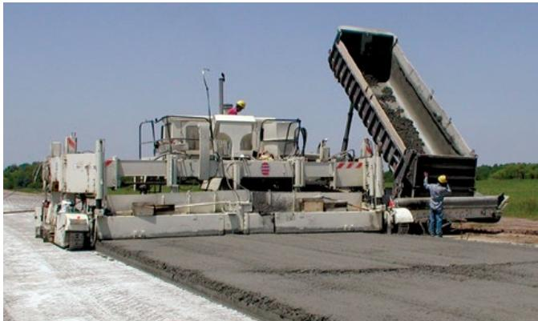
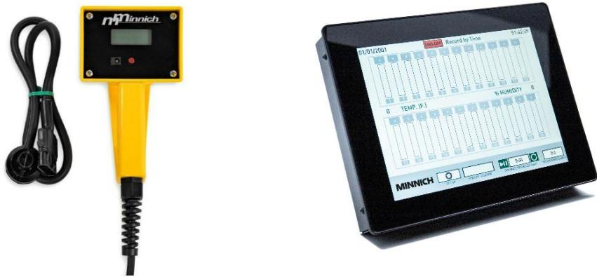
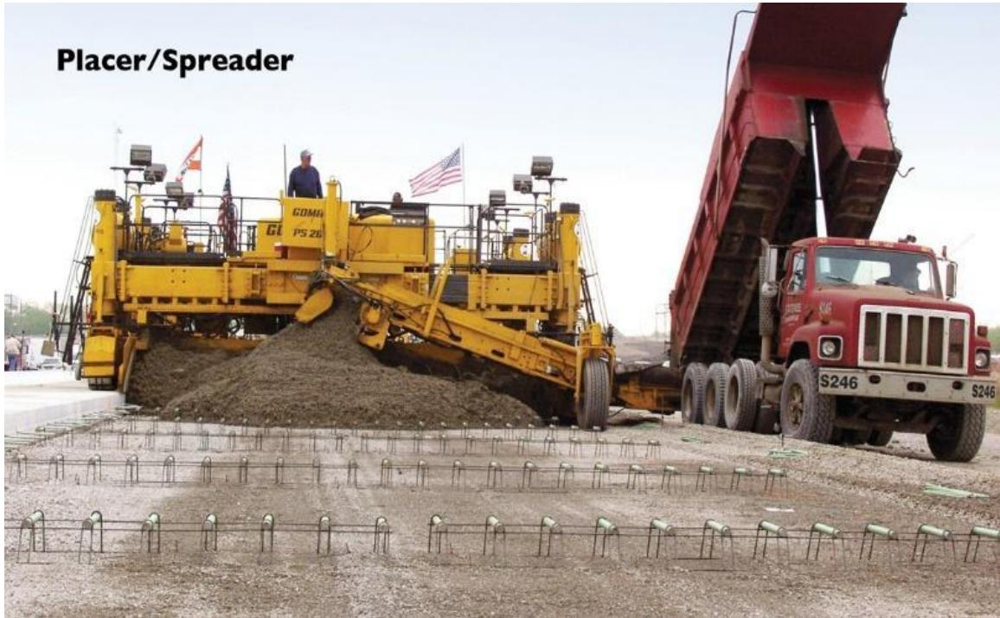

Paving Operations
Paving operations constitute a coordinated sequence that transforms a prepared subgrade into a continuous concrete slab through production, delivery, placement, consolidation, and finishing. The process relies on specialized equipment such as slipform or fixed-form pavers to extrude and shape the fresh concrete while vibration consolidates the mix to eliminate trapped air and achieve uniform density [1] [2]. Successful execution requires precise machine guidance using either physical string lines or modern three-dimensional control systems to maintain accurate alignment and elevation throughout the placement [3] [1]. Operational success depends on maintaining a consistent concrete head and coordinating paver speed with vibration frequency to prevent surface irregularities such as bumps or voids [3] [2]. The integrity of the resulting pavement is further protected by managing subgrade drainage and load transfer to mitigate distress mechanisms like pumping, which forces soil and water from beneath the slab under heavy loads [3] [1].
Paving Operations manages the systematic execution of concrete placement and finishing processes to guarantee structural integrity and surface quality. Concrete Slab Placement handles the precise positioning of fresh material, establishing the foundational geometry required for load-bearing performance. Surface Finishing Refinement applies mechanical or manual techniques to smooth and texture the top layer, ensuring durability and aesthetic consistency. Joint Cutting creates controlled weak points in the hardened concrete, directing crack formation to maintain long-term structural stability.
Sources (3)
Sub-concepts (1)
Key findings
- Identified a stable, smooth trackline as the single most influential design factor for achieving consistently smooth pavement, regardless of the guidance system employed [1].
- Demonstrated that reliable concrete delivery is the linchpin of successful paving, requiring careful balancing of truck numbers against plant capacity and mix setting time to maintain an appropriate concrete head at the paver [1].
- Reported that rigorous documentation serves as the backbone of quality assurance by providing an auditable record of weather, labor, equipment, and test results to oversee construction progress [3].
- Established that protecting early-age concrete from construction traffic is essential, requiring contractors to stage work with load-spreading measures and keep vehicles away from slab edges [3].
- Found that maintaining a uniform hydraulic head in front of the slip-form paver governs surface smoothness, as any deviation in concrete height directly degrades slab flatness [3].
- Measured paving speed requirements, noting that machines must maintain a forward motion above mandated minimums and synchronize with vibrator settings to avoid open surfaces or over-consolidation [3].
- Identified smoothness as the primary surrogate measure of overall construction quality, relying on straightedge or profilograph testing supplemented by real-time sensors for immediate feedback [3].
- Demonstrated that precise slip-form machine set-up before placement remains the most effective lever for meeting straightedge tolerances, enabling on-the-fly corrections during the early plastic stage [3].
Operational Coordination and Quality Assurance
Evidence: 3 reports (2 primary)
Operational coordination in paving requires synchronizing plant logistics, haulage delivery, and paver movement to maintain a consistent concrete head that prevents surface defects [1]. Quality assurance relies on precise machine guidance systems and rigorous equipment setup to ensure accurate alignment, elevation, and slab geometry throughout the placement process [3]. Effective execution demands continuous communication among all crews and strict adherence to vibration and speed settings to achieve uniform density and surface smoothness while mitigating common distresses like pumping [2].
The following figure illustrates the critical process of depositing concrete directly in front of the paving machine.

A dump truck deposits concrete into the hopper of a slipform paver equipped with a belt placer. [1]The image shows a large paving machine extruding a continuous concrete slab while a dump truck unloads fresh material directly in front of it. A belt placer/spreader ensures a consistent amount of concrete in front of the paver, which is essential for maintaining the required head during placement.
Research problem — Paving operations face systemic quality-control challenges stemming from inadequate workability assessment, unstable tracklines, and logistical inconsistencies that compromise surface smoothness and structural integrity [1]. The industry lacks an integrated, consistently applied quality-assurance framework, characterized by documentation gaps, incomplete control programs, and insufficient equipment maintenance that allow non-conforming practices to persist across all paving stages [3]. Cross-cutting deficiencies in controlling equipment-induced vibrations, ensuring proper tool calibration, and maintaining thorough site cleanliness create risks of concrete segregation, surface waviness, and early pavement failure that undermine long-term durability [2].
The following figure illustrates common consolidation defects that arise from these quality-control deficiencies.
 Examples of consolidation problems, unclosed surfaces, and excessive mortar indicating segregation. [3]
Examples of consolidation problems, unclosed surfaces, and excessive mortar indicating segregation. [3]
The figure displays three distinct defects in fresh concrete pavement: a surface with scattered dark debris, an edge exhibiting honeycombing where the aggregate is exposed due to voids, and a slab covered in a layer of excess mortar. The presence of excessive mortar on the surface serves as a visual sign of segregation, compromising the structural integrity and durability of the resulting pavement.
State of the art — Modern quality assurance integrates mix workability verification, logistics coordination, and advanced machine guidance to ensure uniform slab placement [1]. Vibration-sensitivity tests have largely replaced traditional slump testing as the primary method for predicting concrete behavior under aggressive placement conditions [1]. Stringless three-dimensional machine control systems are now standard, replacing physical string lines to improve dimensional accuracy and reduce field surveying efforts [3] [1]. Real-time monitoring of hydraulic head, vibration levels, and smoothness allows for immediate operational corrections to prevent defects such as segregation or surface irregularities [3] [1].
The following figure illustrates the VKelly index, which represents the slope of the plot of penetration depth versus root time.
 VKelly index is the slope of the plot of penetration depth versus root time [1]
VKelly index is the slope of the plot of penetration depth versus root time [1]
The figure displays a scatter plot with vibration duration on the horizontal axis and penetration depth on the vertical axis, showing data points that form a linear trend. A regression equation is provided to calculate the VKelly index, which represents the slope of this relationship.
Findings from the reports
- Identified a stable, smooth trackline as the single most influential design factor for achieving consistently smooth pavement, regardless of the guidance system employed [1].
- Demonstrated that reliable concrete delivery is the linchpin of successful paving, requiring careful balancing of truck numbers against plant capacity and mix setting time to maintain an appropriate concrete head at the paver [1].
- Reported that rigorous documentation serves as the backbone of quality assurance by providing an auditable record of weather, labor, equipment, and test results to oversee construction progress [3].
- Established that protecting early-age concrete from construction traffic is essential, requiring contractors to stage work with load-spreading measures and keep vehicles away from slab edges [3].
- Found that maintaining a uniform hydraulic head in front of the slip-form paver governs surface smoothness, as any deviation in concrete height directly degrades slab flatness [3].
- Measured paving speed requirements, noting that machines must maintain a forward motion above mandated minimums and synchronize with vibrator settings to avoid open surfaces or over-consolidation [3].
- Identified smoothness as the primary surrogate measure of overall construction quality, relying on straightedge or profilograph testing supplemented by real-time sensors for immediate feedback [3].
- Demonstrated that precise slip-form machine set-up before placement remains the most effective lever for meeting straightedge tolerances, enabling on-the-fly corrections during the early plastic stage [3].
Novelty & rigor — Novelty lies in replacing static quality checks with dynamic, real-time monitoring of vibration frequencies and utilizing laser-guided machine control to maintain precise elevation without physical string lines [1]. Reproducibility is achieved by synchronizing concrete delivery logistics with equipment readiness through systematic verification of plant capacity, mixer calibration, and operator training protocols [3] [2].
The following figure illustrates the vibration monitoring equipment used to enable this dynamic quality control.

Vibration testing and monitoring equipment. [3]The figure displays a handheld vibration meter with a yellow casing and a digital display, alongside a separate black touchscreen unit showing real-time data graphs for temperature and humidity. This equipment is used to monitor the frequency and functionality of vibrators during concrete production to ensure acceptable consolidation without segregation or poor finishing quality.
Reported values
| Parameter | Value | Context | Source |
|---|---|---|---|
| maximum clear distance between internal vibrators | 30 inches | UFGS 32 13 14.13 (May 2024) specification limit | [3] |
| maximum distance of outside vibrators from paver edge | 12 inches | UFGS 32 13 14.13 (May 2024) specification limit | [3] |
| minimum forward motion speed | 2.5 feet per minute | DOD’s provision (UFGS 2024) | [3] |
| surface deviation limit | 3/8 to ½ inch | Highest (or lowest) surface deviations | [3] |
| typical paving speed range | 3 to 7 feet per minute | Typical paving operations | [3] |
| extra base width per side | 3 ft | of base width on either side of the slab | [1] |
| maximum stake spacing on tangent sections | 25 ft | between stakes on tangent sections | [1] |
| paving speed | 3 to 15 fpm | typical paving speeds | [1] |
| trackline extension beyond slab edge | 3 ft | outside either edge of the concrete slab | [1] |
| vibration frequency | 5,000 to 8,000 vibrations per minute | for most mixtures | [1] |
Across the reviewed reports, operational coordination and quality assurance in concrete paving are established as systemic challenges that rely on balancing equipment-specific parameters with rigorous procedural controls to ensure uniformity. Both studies identify vibration management and hydraulic head consistency as critical cross-cutting factors, where insufficient or excessive energy compromises durability while uneven concrete distribution directly degrades surface smoothness. The collective evidence indicates that successful paving requires synchronizing plant logistics, such as haul truck metering and site traffic flow, with precise machine set-up and real-time monitoring to maintain the continuous concrete head necessary for meeting strict smoothness tolerances. [3] [1]
The following figure illustrates how placer and spreader aids facilitate this even distribution by pre-striking the concrete ahead of the paver.

A red dump truck unloads concrete into a yellow placer/spreader machine on a construction site. [3]The image shows a large yellow placer/spreader machine positioned in front of a slipform paver, receiving material from an adjacent red dump truck with its bed raised. The machine ensures a uniform hydraulic head, which is critical for maintaining consistent pressure as the slipform mold extrudes the pavement.
Implications — Quality assurance must transition from isolated material tests to a systems-based approach that integrates mix design, equipment calibration, and real-time vibration monitoring to ensure consistent slab performance [1]. Achieving uniform pavement smoothness requires treating concrete delivery as a critical supply chain variable, necessitating precise coordination between plant logistics, haul truck metering, and paver placement speed [3] [1]. Effective operational control depends on robust documentation practices and proactive protection of early-age concrete, balancing the adoption of digital monitoring tools against the persistent need for manual oversight and contingency planning [3].
Limitations — The electronic elevation control systems on slipform pavers cannot compensate for significant vertical disturbances caused by an unstable base or trackline [1]. Excessive vibration frequencies used to overcome poor equipment setup, alignment, or mixtures can degrade air entrainment and cause aggregate segregation [3] [1]. The industry lacks a comprehensive understanding of optimal vibration parameters for ensuring durability and preventing segregation [3].
The following figure illustrates sensor control issues associated with stringline paving.
 Sensor control issues with stringline paving (ACPA 2013). [3]
Sensor control issues with stringline paving (ACPA 2013). [3]
The figure displays two schematic diagrams of a sensor mechanism interacting with a suspended stringline supported by vertical stakes. The top diagram illustrates the sensor following a sagging string, while the bottom diagram depicts scenarios where the sensor loses contact or pulls the string due to improper tensioning. These visual examples demonstrate deviations caused by loss of sensor contact and bumps created by sensors catching on knots or splices in the stringline. This figure illustrates specific operational challenges related to maintaining accurate alignment and elevation during paving operations using physical string lines.
Related concepts
In this hierarchy
- Child: Paving Operations
Related by shared evidence
- Aggregate Management — shares 3 reports
- Cement Chemistry — shares 3 reports
- Cementitious Materials — shares 3 reports
- Concrete Mixture Design — shares 3 reports
- Concrete Production — shares 3 reports
- Concrete Strength — shares 3 reports
- Concrete Testing — shares 3 reports
- Cracking Mitigation — shares 3 reports
Similar topics
- Concrete Production
- Pavement Design
- Paving Operations
- Pavement Management
- Pavement Management
- Quality Control
- Other
- Pavement Repair
References
- Integrated Materials and Construction Practices for Concrete Pavement: A STATE-OF-THE-PRACTICE MANUAL (2019)
- Concrete Pavement Preservation Guide (Third Edition) (2022)
- Best Practices Manual: Quality Control and Quality Acceptance of Concrete Airport Pavement (2025)
Feedback on this page